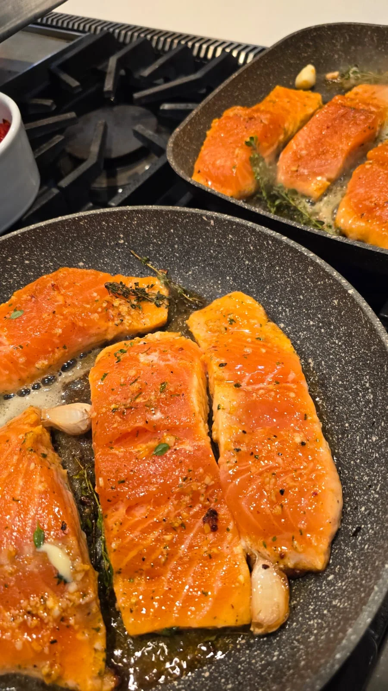
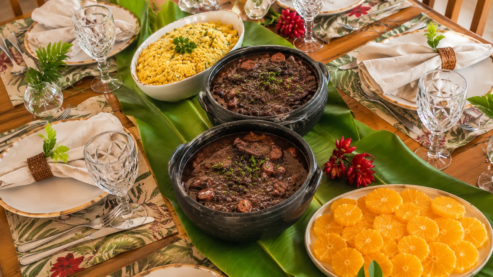
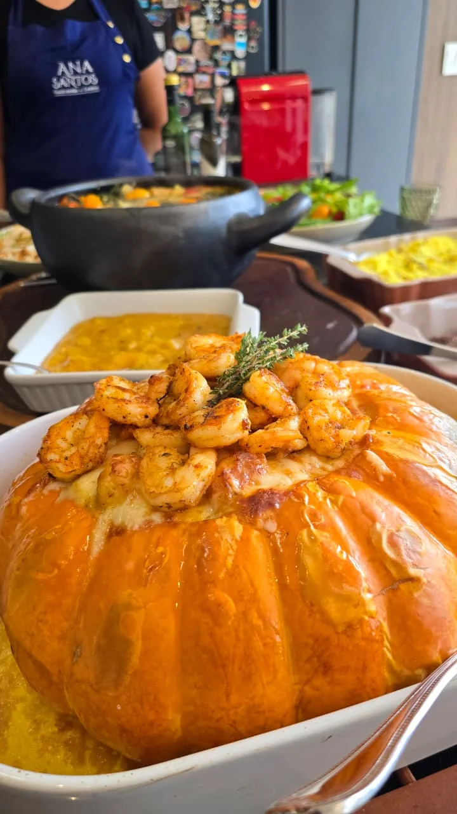
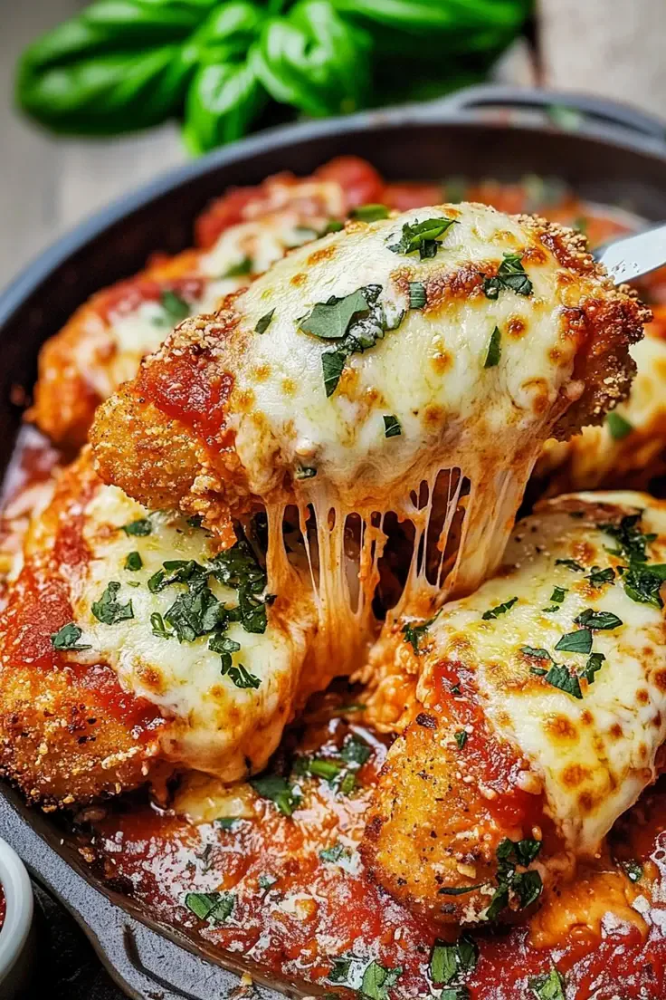
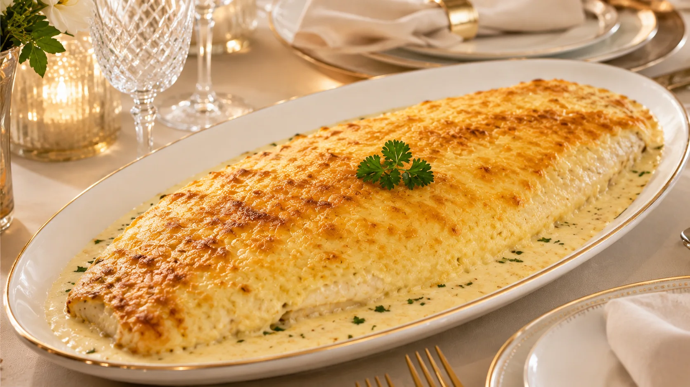
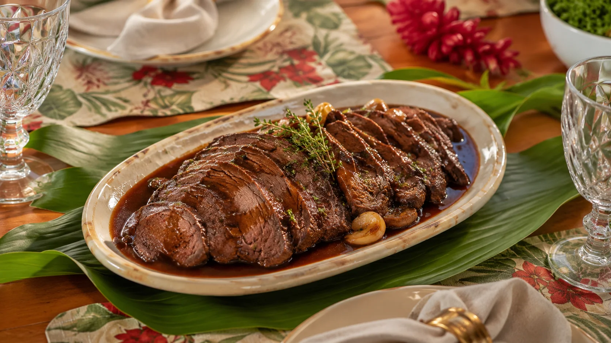
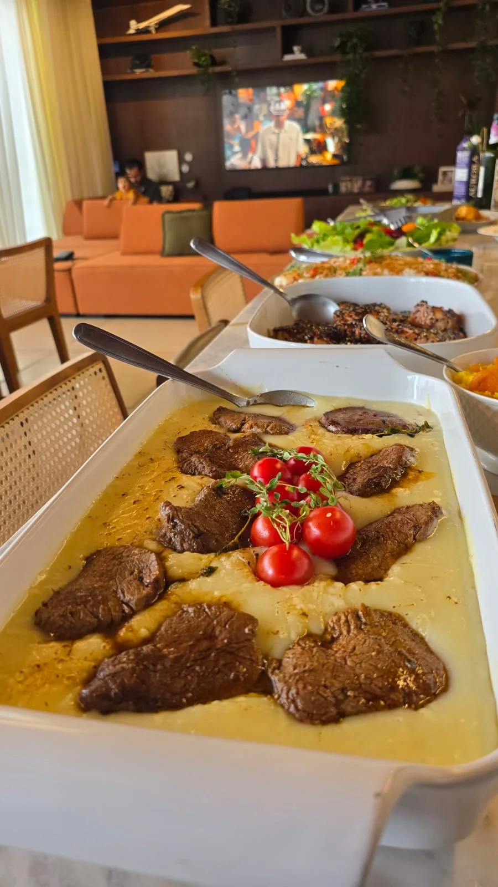
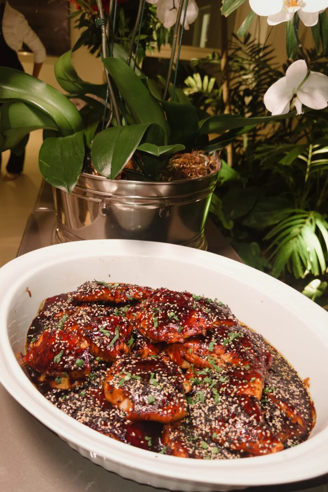
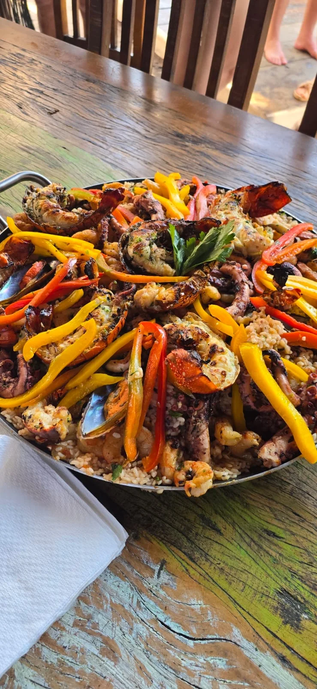

Menu leve
Salmão grelhado com legumes assados
Salmão dourado, servido com legumes assados.
Gastronomia brasileira premium
Feijoada Premium, jantares exclusivos e menus autorais para ocasiões que pedem presença, beleza e sabor.
Escolha sua experiência
Escolha uma opção para ver os pratos e falar diretamente com a Chef Ana.

Uma seleção de massas artesanais com molhos encorpados para uma noite especial.
Ver opções ↗
Risotos cremosos e finalizados no ponto para uma experiência marcante à mesa.
Ver opções ↗
Menus para aniversários, encontros de família, recepções e confraternizações.
Ver opções ↗
Menu autoral para uma noite especial, com entrada, prato principal e sobremesa.
Ver opções ↗
Todos os sábados ou em uma data exclusiva, com acompanhamentos pensados para o número de convidados.
Ver opções ↗Sabores que convidam
Imagine o camarão dourado, o risoto cremoso e o perfume das ervas frescas chegando à mesa. A Chef Ana combina ingredientes selecionados e temperos bem equilibrados para que cada garfada desperte vontade de provar a próxima.



A Chef
A Chef Ana Santos une sabores brasileiros, preparo artesanal e apresentação elegante para criar experiências gastronômicas sob encomenda. A proposta não é apenas servir pratos, mas conduzir uma ocasião com cuidado do começo ao fim.
Inspirações premium
As imagens funcionam como vitrine de desejo. O cliente não precisa escolher tudo sozinho.

Salmão dourado, servido com legumes assados.
Massa artesanal envolvida em um molho cremoso de camarões.

Filé mignon com molho cremoso de gorgonzola.

Filé empanado, molho de tomate e queijo gratinado.

Peixe delicado com cobertura dourada e molho bechamel.
Moranga assada, recheio cremoso e camarões dourados.

Carne macia, fatiada e servida com molho encorpado.
Uma seleção de massas artesanais para compartilhar.
Risotos preparados e finalizados para uma noite especial.

Filé macio servido sobre musseline de batatas.

Salmão laqueado em molho intenso, finalizado com gergelim.

Arroz e frutos do mar preparados para chegar à mesa com presença.

Crosta aromática, legumes tostados e ervas frescas.
Especialidade brasileira
O clássico brasileiro ganha uma apresentação mais cuidadosa, acompanhamentos selecionados e uma proposta ideal para almoços, aniversários e confraternizações.
Quero proposta de feijoadaComo funciona
Data, número aproximado de pessoas e tipo de evento. Só o essencial.
A proposta considera estilo, quantidade de convidados e nível da experiência.
Menu, formato de serviço e próximos passos em uma conversa simples pelo WhatsApp.
“Você não precisa saber qual prato escolher. Só precisa contar qual ocasião deseja tornar especial.”
Chef Ana Santos
Orçamento guiado
O formulário foi feito para reduzir desistência. O cliente informa o básico e já sai para o WhatsApp com uma mensagem pronta.